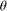
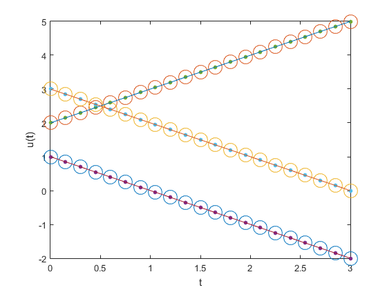

The theta method
Contents
clear FDLabFolders
Time-stepping for a generic linear system of ODEs
Task: Implement the -scheme for a generic linear system of ODEs.
dbtype FDSolveLinearODEs
1 function Y = FDSolveLinearODEs(M, A, f, t, y0, theta, Solver) 2 %FDSOLVELINEARODES Solve linear system of ODEs. 3 % YY=FDSOLVELINEARODES(M,A,F,T,Y0,THETA) returns a numerical 4 % solution to the initial value problem 5 % M*Y'(t) = A*Y(t) + F(t) 6 % Y(T(1)) = Y0 7 % T(1) <= t <= T(end), 8 % where 9 % M is a constant mass matrix, or [] if no mass matrix is required 10 % A is a constant stiffness matrix 11 % F is a given function of time 12 % Y0 is a given vector containing the initial state 13 % [T(1), T(end)] is the time interval of interest 14 % YY(k,:) is our numerical approximation of Y(T(k)). 15 % 16 % FDSOLVELINEARODES(...,SOLVER) employs a custom algorithm for 17 % solving the system of linear equations that results at each time step. 18 % SOLVER(AA,BB,X0) should compute X such that AA*X=BB 19 % where AA is an arbitrary matrix, 20 % BB is an arbitrary vector, 21 % and X0 is an "initial guess" of X. 22 % 23 % Time step sizes are given by DIFF(T) 24 % i.e. the size of the K'th step is T(K+1)-T(K). 25 % 26 % THETA dictates the time-stepping scheme: 27 % THETA Method Order of Accuracy 28 % 0.0 Explicit Euler 1st order 29 % 1/2 Crank-Nicolson 2nd order 30 % 2/3 Galerkin Method 1st order 31 % 1.0 Implicit Euler 1st order 32 % 33 % See also ODE45, ODE15S. 34 35 narginchk(6, 7) 36 37 if nargin < 7 || isempty(Solver) 38 % Default solver for linear algebraic equations 39 Solver = @(AA, bb, x0) AA\bb; 40 end 41 42 Y = FDSolveLinearODEsImplementation(M, A, f, t, y0, theta, Solver);
Configure a small test problem whose solution exhibits mild growth
clear M = [1 1 0; 0 1 0; 0 0 1]; % non-singular mass matrix A = -[1 1 1; 0 1 2; 0 -2 1]; % RHS system matrix n = length(A); % system dimension y0 = (1 : n)'; % initial states numSteps = 20; % number of time steps tGrid = linspace(0, 3, numSteps + 1)'; % grid of time points [exactSolution, ODESource] = DataLinearODE(M, A, tGrid(1), y0);
Solution with our new code
theta = 2/3;
u = FDSolveLinearODEs(M, A, ODESource, tGrid, y0, theta); % solve IVP
Reference solution with ode45
options = odeset('Mass', M);
[~, uref] = ode45(@(t, u) A*u + ODESource(t), tGrid, y0, options);
Visual comparison of solutions
clf set(gca, 'FontSize', FontSize) plot( ... tGrid, u, 'o', ... tGrid, uref, '.', ... tGrid, FDEvaluateRows(exactSolution, tGrid), '-', ... 'MarkerSize', 15) xlabel('t') ylabel('u(t)')
assert(norm(Compare(u, uref), inf) < 1e-12, 'Mismatch exceeds 1%')